例：画像のノイズ除去
PRML §8.3.3
naoya_t
2013.7.21 PRML復々習レーン
naoya_t
2013.7.21 PRML復々習レーン
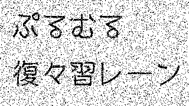 → 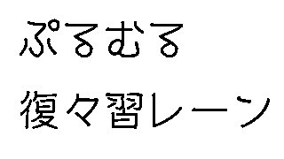
usage: python add_noise.py <orig> <noise-rate> [<output>]
$ python add_noise.py revenge.png 5 revenge05.png $ python add_noise.py revenge.png 10 revenge10.png $ python add_noise.py revenge.png 15 revenge15.png $ python add_noise.py revenge.png 20 revenge20.png $ python add_noise.py revenge.png 25 revenge25.png $ ...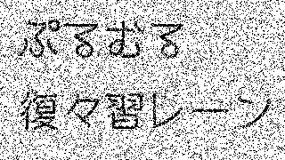 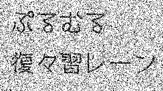

import sys
import random
import Image
def add_noise(img_orig, noise_rate):
width, height = img.size
S = width * height
n = int(S * noise_rate + 0.5)
to_toggle = [False] * S
for i in range(n): to_toggle[i] = True
random.shuffle(to_toggle)
pix = img.load()
for y in range(height):
for x in range(width):
i = y * width + x
if to_toggle[i]:
pix[x,y] = 255 - pix[x,y]
return img
if __name__ == '__main__':
if len(sys.argv) != 4:
print "usage: python %s
xi ∈ { -1, +1 } ・・・元の画像（ノイズなし）
yi ∈ { -1, +1 } ・・・観測画像（ノイズを含む）
これらの事前知識を表現するマルコフ確率場モデルを考える。（図8.31）
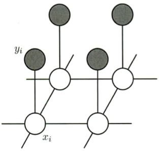
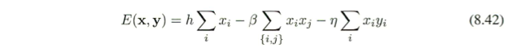
-ηxiyi：クリーク {xi, yi} に対応（ηは正定数）
・xi と yi が同符号のとき：低いエネルギー（高い確率）
・xi と yi が異符号のとき：高いエネルギー（低い確率）
を持つような関数でこれらの変数間の相関を表現する。
-βxixj：クリーク {xi, xj} に対応（βも正定数）
隣接する２ピクセルが異符号の場合よりも同符号の場合の方がエネルギーが低くなるようにしたい。
hxi：バイアス項
ピクセル値が特定の符号を持ちやすくするようにバイアスをかける効果を持つ。
エネルギー関数 E (x, y) を
として、x および y の同時分布は
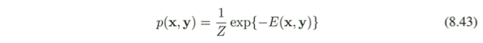
y の各成分にノイズ入り画像の各ピクセル値をセットする
→ ノイズなし画像の条件付き分布 p(x|y) が暗に定まる。
最大確率をもつ画像 x（⇔ エネルギー関数 E (x, y) を最小にする x）を求めることで、ノイズ無し画像を復元する。
この問題は、統計物理学において広く研究されてきたイジングモデル (Ising model) の例である。 → イジング模型 (Wikipedia)
(1) 最初に変数 {xi} を初期化する。（xi = yi でよい）
(2) ノード xj を１つ選ぶ。
ノードの選択は規則的（左上から順にとか）でもランダムでも構わない。
(3) 他のノード変数の値は固定したまま xj の２つの可能な状態 {-1, +1} における
全エネルギーを評価する。
(4) xj を、全エネルギーが小さくなる方に設定する。
(5) 停止基準を満たすまで(2)〜(4)を繰り返す
という簡単な繰り返し法（反復条件付きモード, ICM）で、高い確率（できれば最大確率）p (x) をもつ画像 x を求めることができる。
但し、実際に求まるのは局所最大点であり、大域的最大点とは限らない。
１回の操作で１つの変数しか変化しないので、ノード更新は例えばテレビ画面のスキャンのように規則的に行ってもよいし、ランダムにノードを選択していってもよい。
| 左上から順にノードを選択した場合 | ランダムにノードを選択した場合 |
↑ 同じ画像（10％ノイズ入り）に対し、１つは左上から規則的に、もう１つはランダムにノードを選択しながら操作を繰り返す様子（２周目まで）をGIFアニメにしてみた
左上から順番に走査しながら、反転するとエネルギーを減らせるピクセルを反転。
走査前後のエネルギー差分がεを下回ったら（あるいは10回やったら）終了。
$ python remove_noise.py revenge10.png revenge10-a.png 1.0 2.1 0 $ python remove_noise.py revenge10.png revenge10-b.png 0.1 0.1 0.01
| 元画像 | ノイズ10％付加 |
| β = 1.0, η = 2.1, h = 0 | β = 0.1, η = 0.1, h = 0.01 |
| 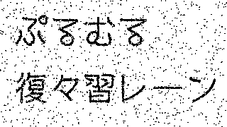 | 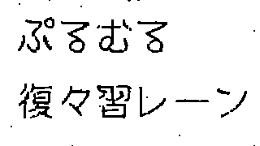 |
import sys
import Image # PIL
if (sys.argv) == 6:
BETA = float(sys.argv[3])
ETA = float(sys.argv[4])
H = float(sys.argv[5])
else:
BETA = 0.1
ETA = 0.1
H = 0.01
EPS = 1e-5
def E(xs, ys, width, height):
S = width * height
s0 = s1 = s2 = 0
for i in range(S):
s0 += xs[i]
s2 += xs[i] * ys[i]
for y in range(height-1):
for x in range(width-1):
i = y*width + x
s1 += xs[i] * xs[i+1] + xs[i] * xs[i+width]
return H * s0 - BETA * s1 - ETA * s2
def remove_noise(img):
width, height = img.size
S = width * height
pix = img.load()
xs = [0]*S
ys = [0]*S
for x in range(width):
for y in range(height):
i = y*width + x
xs[i] = ys[i] = 1 if pix[x,y] > 0 else -1
def de(i):
s0 = xs[i]
s1 = 0
if i > 0: s1 += xs[i] * xs[i-1]
if i < S-1: s1 += xs[i] * xs[i+1]
if i >= width: s1 += xs[i] * xs[i-width]
if i < S-width: s1 += xs[i] * xs[i+width]
s2 = xs[i] * ys[i]
curr_e = H * s0 - BETA * s1 - ETA * s2
toggled_e = -curr_e
return toggled_e < curr_e
def reflect():
for i in range(S):
x = i % width
y = i / width
pix[x,y] = 255 if xs[i] == 1 else 0
energy = E(xs, ys, width, height)
print 0, energy
for j in range(10):
for i in range(S):
if de(i): xs[i] = -xs[i]
new_energy = E(xs, ys, width, height)
print 1+j, new_energy
if energy - new_energy < EPS: break
energy = new_energy
reflect()
return img
if __name__ == '__main__':
if len(sys.argv) < 3:
print "usage: python %s <input> <output> [beta eta h]" % sys.argv[0]
sys.exit()
img = Image.open(sys.argv[1])
img2 = remove_noise(img)
img2.save(sys.argv[2])
| ノイズ5％ | ノイズ10％ | ノイズ15％ | ノイズ20％ | |||||||||||||||||||||
 |
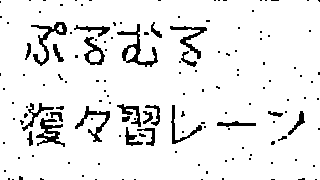 | |||||||||||||||||||||||
| ノイズ25％ | ノイズ30％ |
| ||||||||||||||||||||||
|
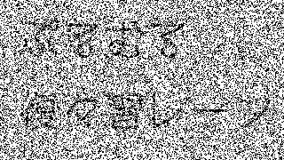 | |||||||||||||||||||||||
| 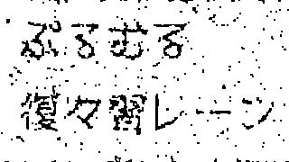 | 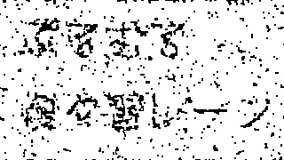 | |||||||||||||||||||||||
max-productアルゴリズム (see §8.4.5)
大域的最大点を必ずしも与えないが、多くの場合ICMよりも良い解を与える。
グラフカットアルゴリズム
大域的最大解が得られることが保証されている。
(Greig et al., 1989; Boykov et al., 2001; Kolmogorov and Zabih, 2004)
石川 博先生のチュートリアル「グラフカット」が分かりやすいので是非見てみて
→ http://ci.nii.ac.jp/naid/110006250836/
マルコフ確率場では無向グラフを用いたが、ここでは有向グラフを用いる。
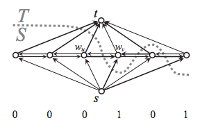
graph-tool (Python) を使ってみた。 Boostのグラフライブラリのラッパー的な感じ。
（OS XでうまくインストールできなかったのでUbuntuでやりました＞＜）
$ python remove_noise_graphcut.py revenge10.png revenge10-gc.png
→ 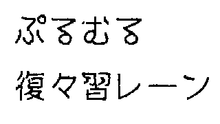
エネルギー関数を具体的にどう設定したら良いのか分かってなくて、capacityを適当に設定しているのでちゃんと最適解が出ていない可能性が大ですが、とりあえずICM相当の精度は出てます。しかしめちゃ遅です。（320x180の画像で、ローカルのvirtualbox上で50〜55秒）
粒々で残ることがないのが特徴ですね。
import sys
import Image
from graph_tool.all import *
def remove_noise(img):
width, height = img.size
S = width * height
g = Graph()
capacity = g.new_edge_property("int")
for i in range(S):
v = g.add_vertex()
start = g.add_vertex()
goal = g.add_vertex()
pix = img.load()
for x in range(width):
for y in range(height):
i = y*width + x
p = 1 if pix[x,y] == 255 else 0 # {0, 1}
e = g.add_edge(start, i)
capacity[e] = 5 + 4*p
e = g.add_edge(i, goal)
capacity[e] = 5 + 4*(1-p)
for i in range(S):
if i > 0:
e = g.add_edge(i, i-1)
capacity[e] = 3
if i < S-1:
e = g.add_edge(i, i+1)
capacity[e] = 3
if i >= width:
e = g.add_edge(i, i-width)
capacity[e] = 3
if i < S-width:
e = g.add_edge(i, i+width)
capacity[e] = 3
residual = push_relabel_max_flow(g, start, goal, capacity)
mincut, partition = min_st_cut(g, start, residual)
for i in range(S):
x = i % width
y = i / width
pix[x,y] = 255 if partition.a[i] else 0
return img
if __name__ == '__main__':
if len(sys.argv) < 2:
print "usage: python %s <input> <output>" % sys.argv[0]
sys.exit()
img = Image.open(sys.argv[1])
img2 = remove_noise(img)
img2.save(sys.argv[2])
| ノイズ | 元画像 | ICMによるノイズ除去 | グラフカットによるノイズ除去 |
| 5% | 99.58% / 97.02% / 97.33% |
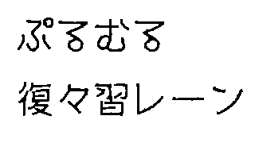 99.52% / 96.95% / 96.84% |
|
| 10% | 99.13% / 94.35% / 96.31% |
99.25% / 95.74% / 96.71% |
|
| 15% | 98.52% / 90.40% / 95.51% |
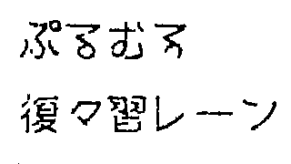 98.53% / 88.22% / 96.99% |
画像下の数字は復元率（全体の復元率 / 文字部分の復元率 / 白地部分のノイズ除去率）
| ノイズ | 元画像 | ICMによるノイズ除去 | グラフカットによるノイズ除去 |
| 20% | 97.34% / 86.56% / 92.31% |
97.66% / 80.86% / 96.48% |
|
| 25% | |
95.05% / 80.06% / 87.59% |
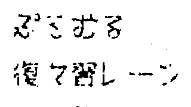 96.61% / 69.90% / 96.27% |
| 30% | 91.55% / 71.61% / 80.75% |
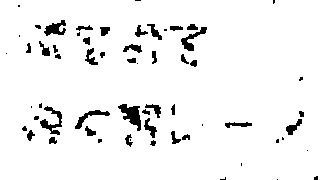 95.22% / 54.27% / 95.93% |
画像下の数字は復元率（全体の復元率 / 文字部分の復元率 / 白地部分のノイズ除去率）